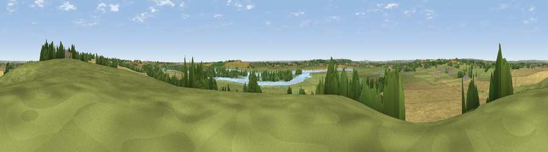

Viewpoint near Latchingdon
#24454 in England · top 28% of its area beats it · near LatchingdonThe view, rendered

A 360° render of this exact spot computed from the terrain model, tree cover and land cover — summer colours, afternoon light, calibrated against photographs of famous viewpoints. Real trees, hedges and buildings will differ in detail.
The panorama
Grey silhouette: terrain skyline in each direction (720 bearings, Earth curvature and refraction included). Dashed green: skyline with trees (+15 m) and buildings (+8 m) as obstacles. Blue strip: how far the ground is visible on each bearing.
Where the view opens
Wedge length = distance to the farthest visible ground on that bearing (vegetation-aware). Rings at 10, 25 and 50 km.
What fills the view
52% grassland · 33% cropland · 6% water · 5% woodland · 3% wetland · 1% built-up
Angular shares of the visible panorama (visual magnitude), not map area. Landscape diversity 0.51 (0–1 Shannon).
Key numbers
More beautiful places nearby
The staircase of upgrades: each row has a higher view potential than everything closer. Driving times are estimates from straight-line distance, calibrated against real road routing — check an actual route before setting out.
| Place | Direction | Drive | Score |
|---|---|---|---|
| Stamfords Hill | ENE · 1 km | ~3 min | 54.1 |
| Viewpoint near Hadleigh | SSW · 14 km | ~25 min | 57.4 |
| Viewpoint near Hadleigh | SW · 14 km | ~26 min | 61.0 |
| Viewpoint near South Benfleet | SW · 15 km | ~27 min | 62.9 |
| Viewpoint near Burham | SSW · 38 km | ~57 min | 63.1 |
| Bluebell Hill | SSW · 38 km | ~57 min | 64.8 |
| Viewpoint near Boxley | SSW · 40 km | ~59 min | 65.4 |
| Viewpoint near Boxley | SSW · 40 km | ~59 min | 68.6 |
51.64995, 0.71937 · source: screening · position refined by local search. Computed location — check access rights before visiting.